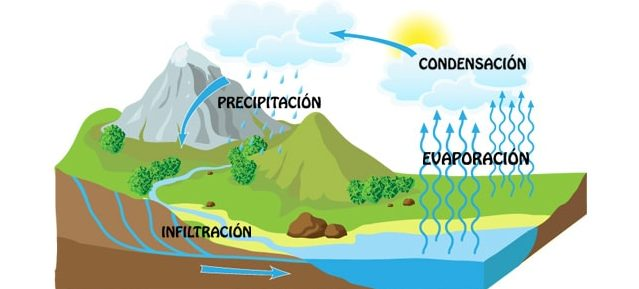

Ciclo del agua
Toda el agua de la Tierra forma la hidrosfera, que se distribuye en tres reservorios principales: los océanos, los continentes y la atmósfera. Entre estos reservorios existe una circulación continua. Alrededor del 70% de la superficie del planeta está cubierta por las aguas de los océanos, lagos, ríos, arroyos, manantiales y glaciares. Al perforar el subsuelo, por lo general se puede encontrar agua a profundidades diversas (agua subterránea o mantos freáticos).
La luz solar es la fuente de energía térmica necesaria para el paso del agua desde las fases líquida y sólida a la fase de vapor, y también es el origen de las circulaciones atmosféricas que transportan el vapor de agua y mueven las nubes. Los rayos solares calientan las aguas. El vapor sube a la troposfera en forma de gotitas. El agua se evapora y se concentra en las nubes. El viento traslada las nubes desde los océanos hacia los continentes. A medida que se asciende bajan las temperaturas, por lo que el vapor se condensa. Es así que se desencadenan precipitaciones en forma de lluvia y nieve. El agua caída forma los ríos y circula por ellos. Además, el agua se infiltra en la tierra y se incorpora a las aguas subterráneas (mantos freáticos). Por último, el agua de los ríos y del subsuelo desemboca en los mares.

ATRAS